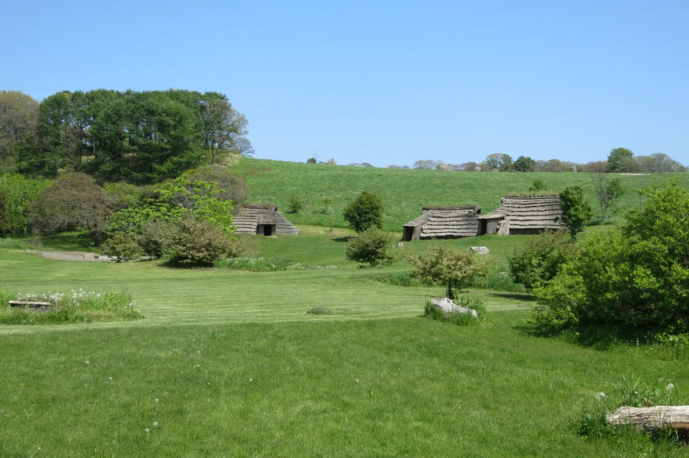
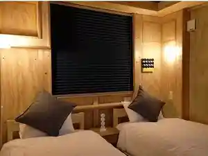
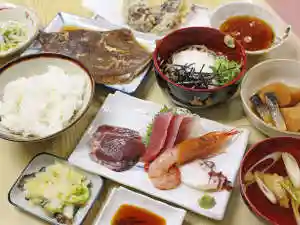
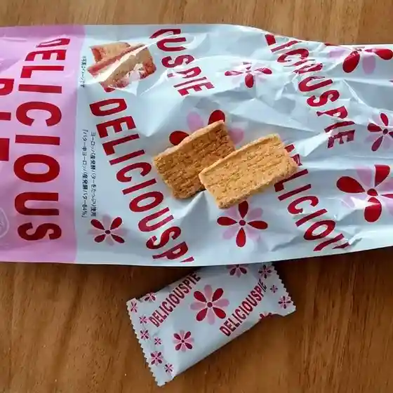
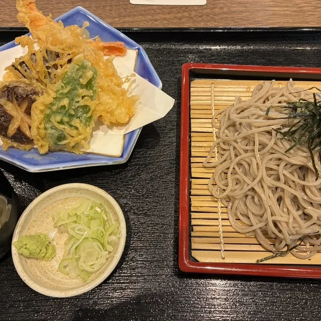
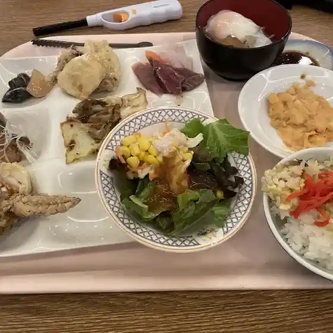

Dateshi
Dateshi · Hokkaido
Dateshi
Highlighted on the Hokkaido map.

伊達市 (北海道)" width="1280" height="853" loading="lazy">Stay
HOTEL DATTEL
Hotel Dattel
ダテプリンスホテル
Datepurinsuhoteru
錦旅館
Nishiki Ryokan
伊達ビジネスホテルキャッスル
Date Bijinesuhoterukyassuru
ATTA Toya - Dome Gramp

Atta Toya - Dome Gramp
北湯沢温泉 温泉民宿たかはし

Kita Yuzawa Onsen Onsen Minshuku Takahashi
湯元 ホロホロ山荘
Yumoto Horohoro Sansou
Dining
いろはにほへと 伊達店

Irohanihoheto Date Mise
不二家 伊達店

Fujiya Date Mise
凛万乃風
Rin Man No Kaze
伊達カントリー倶楽部

Date Kantorii Kurabu
菊彗

Kiku Sui
民宿山本

Minshuku Yamamoto
野呂民宿

Noro Minshuku
ホロホロ山荘

Horohoro Sansou
食事処 やませみ
Shokuji Tokoro Yamasemi
レストラン悠
Resutoran Yuu
大衆酒場 粋や
Taishuu Sakaba Sui Ya
ビレッジ大滝キャンプ場
Birejji Ootaki Kyanpu Ba
しあわせなぱん屋 てんねんや
Shiawasenapan Ya Tennenya
スイーツナチュール
Suiitsunachuuru
つぼ八 伊達店
Tsubo Hachi Date Mise
やきとりの一平 伊達店
Yakitorino Ippei Date Mise
道産パン工房 夢力
Dousan Pan Koubou Yume Chikara
Cafe Limu
Cafe Limu
北大路
Kitaooji
食工房 ろっきー
Shoku Koubou Rokkii
セイコーマート 南有珠店
Seikoomaato Minami Usu Mise
麺屋こころみ
Men Ya Kokoromi
緑の風リゾート フレンチ&イタリアン ZEN
Midori No Kaze Rizooto Furenchi & Itarian Zen
わかさいも本舗 イオン伊達店
Wakasaimo Honpo Ion Date Mise